VR
VR全景图制作教程
0.引言

全景图制作完成的效果如图，可以采用普通/小行星等视角。
需要使用的软件有：Adobe Photoshop、Image Composite Editor（ICE）、PTGui、krpano、pano2vr等。除ICE外，其余均为收费软件。本文以Photoshop 2023、ICE2.0.3.0、PTGui x12、krpano-1.19-pr15、Pano2VR6 64bit进行演示。
1.拍摄
全景图片的拍摄可以分为两类：a.使用大疆无人机自动拍摄；b.使用手机、相机等手动拍摄。
a.大疆无人机拍摄
此方法极为简单，只需要在DJI Fly App中，选择【球形】即可，无需设置手动曝光，无人机和App会自动操作。
对于大疆旧型号无人机如Mini2等，其拍摄完成后，可以在进入快传模式时，下载合成全景图；新型号如Mavic3等，拍摄完成后会自动立即合成全景图，合成后拍摄目录下会自动生成对应的jpg格式文件。大疆自带的合成功能会自动进行“补天”操作，但效果有时可能较差，因此笔者更推荐进行手动合成以获得更好的图像质量。手动合成的方法参加下一节【手动合成】。
b.相机、手机拍摄
在使用相机、手机拍摄时，必须使用M档手动曝光，以保证所有图片曝光一致；最好能够使用三脚架。笔者建议的拍摄顺序是：首选环绕360°拍摄基本的全景图，然后拍摄顶部天空、底部地面。拍摄时，避免移动过大；必须保证图像之间有较大重叠。若使用RAW格式拍摄处理，则后期对计算机配置要求会较高。
2.合成与处理
使用大疆无人机自动合成可以跳过此步骤。
a.预处理
在拍摄完毕后，需要先对图像进行预调整。可以先将图像导入Lightroom，应用镜头矫正、去暗角、统一曝光，然后导出。如果不喜欢Lr，也可以使用相机厂商自己的后期调整软件，如尼康的NX Studio。若追求最佳画质，可以使用PSD；若计算机性能较差，建议使用JPG并适当减少图片像素。此步骤与普通图像的后期过程相同，此处不再赘述。
b.合成
2：1全景图的合成可以使用ICE或PTGui。笔者个人的感受是，ICE在全自动时成功率更高，PTGui则提供了更加丰富的手动调整功能，适合对图像质量要求更高、需要精细调整的人员使用。
这里分别简单介绍ICE和PTGui的使用。
i.ICE
ICE的使用相当简单。正确安装ICE后，直接选中需要合成的图像，右键【Stitch using Image Composite Editor】。

然后直接【Next】下一步。

ICE会自动分析并合成，需要等待一段时间。
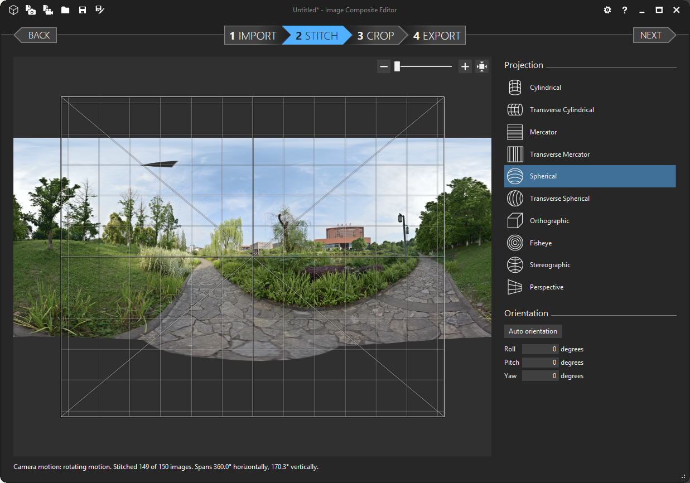
合成完毕后，可以调整图像中心位置、上下位置、扭曲、变形等。调整完毕后，点击【Next】。

若图像有不完整的部分，可以点击【Auto Complete】进行自动填充，也可以后续在Photoshop中进行填充。

填充完毕后，点击【Next】。

最后设置输出参数，然后点击【Export to Disk】导出图片。
ii.PTGui
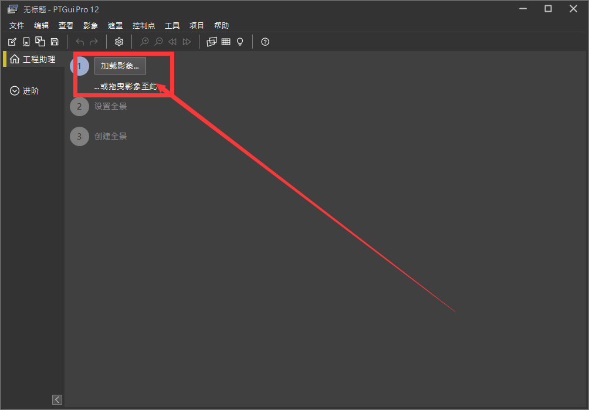
打开PTGui后，点击【加载图像】，选择需要合成的图像。
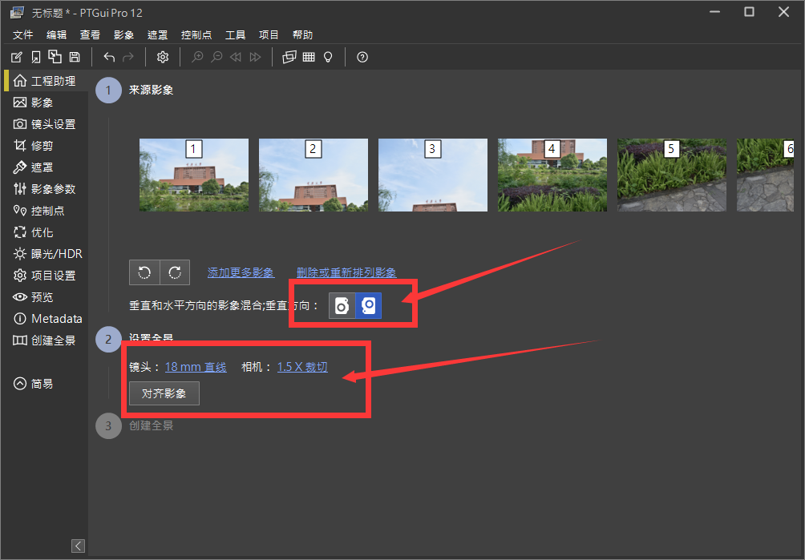
选择正确的相机垂直方向、相机参数、镜头参数，然后点击【对齐图像】。之后其会自动分析，分析完毕后会弹框展示合成结果。
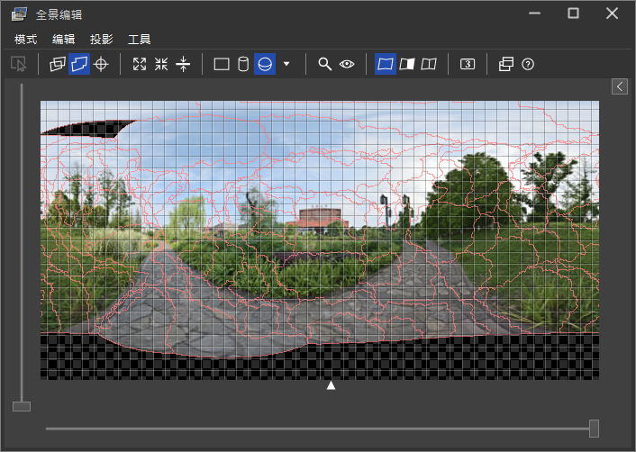
这里可以调整图像缩放、拉伸、中心位置等，按需调节。完成后，关闭全景编辑窗口。
（注：如果对自动合成效果不满意，可以手动调整、添加控制点：切换到左侧【控制点】选项卡，手动调整。

）
然后点击【创建全景】。
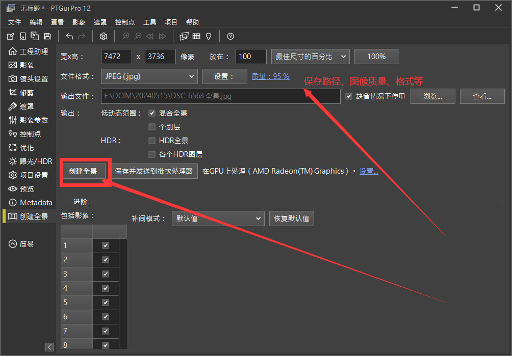
完成输出参数配置，然后点击【创建全景】导出图片。
c.瑕疵修补
导出的图像可能会有部分缺失、扭曲等，这时可以使用Pano2vr进行提取和修补。
打开Pano2vr，直接拖拽导入需要调整的图像：

软件会自动载入全景图，并预览vr。
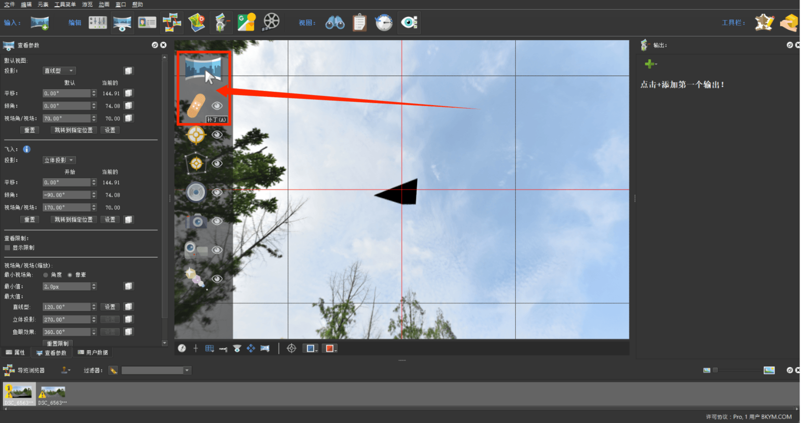
转动到有瑕疵的区域，选择补丁工具，设置需要修补的区域，最后点击【提取】，使用ps进行修补。修补完成并保存后，pano2vr会自动载入修改后的图像并应用。
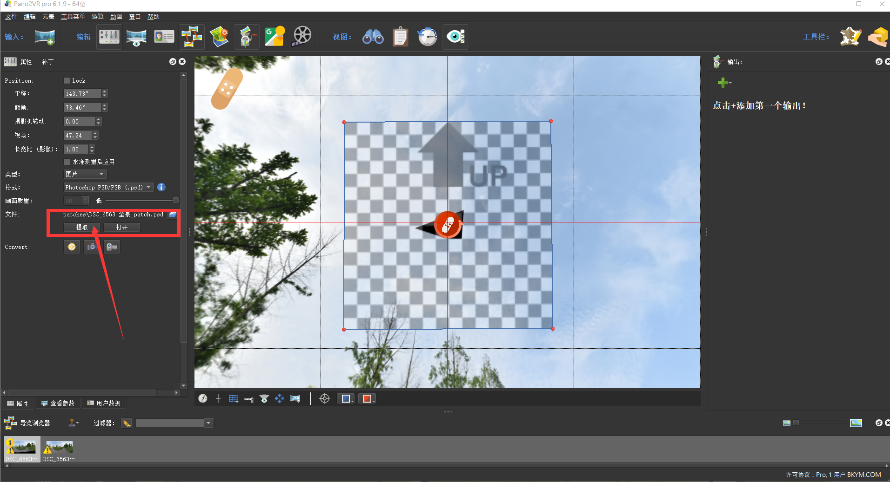
修补前：
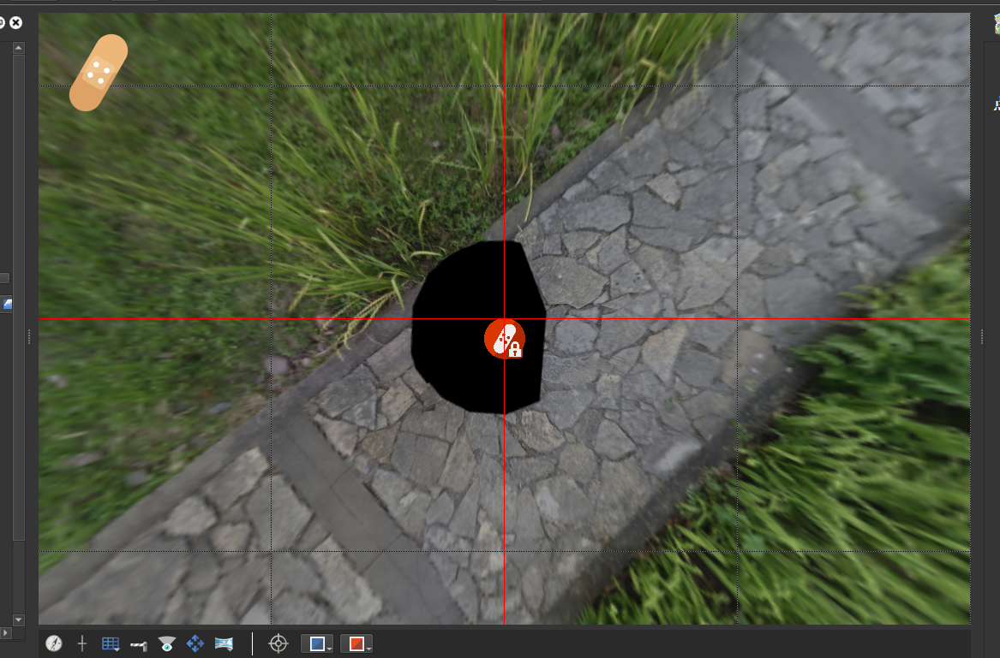
修补后：

完成修补后，可以转换输出修改后的图像。点击左侧【转换输入】，设置输出参数，最后点击【转换】。
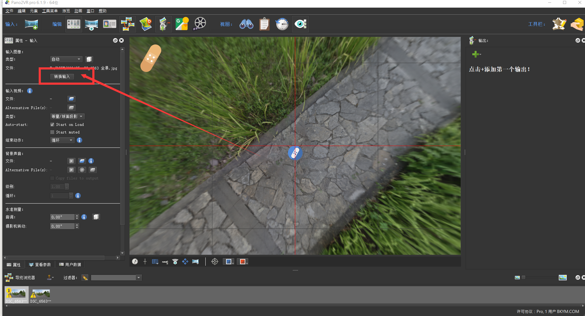
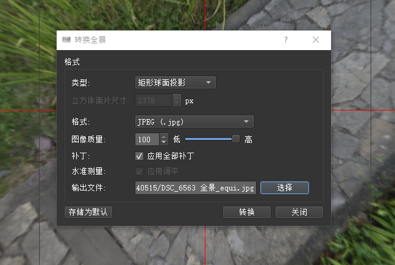
也可以直接使用pano2vr输出全景vr项目。
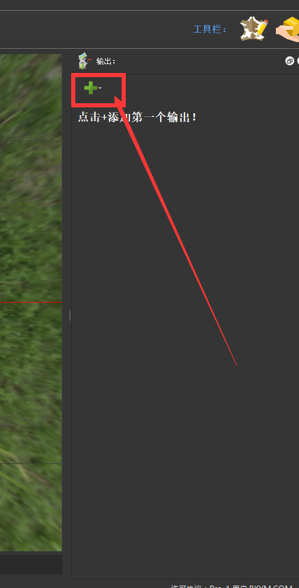
此处以html5为例，点击【+】，配置参数，即可输出对应的静态网页文件。
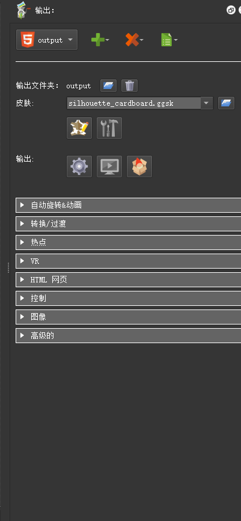
d.后期调整
完成图像的基本调整后，可以使用ps进行套滤镜、调色等操作。调色、套滤镜也可以在预处理时进行。如果有需要，也可以在图像上添加个人版权水印。
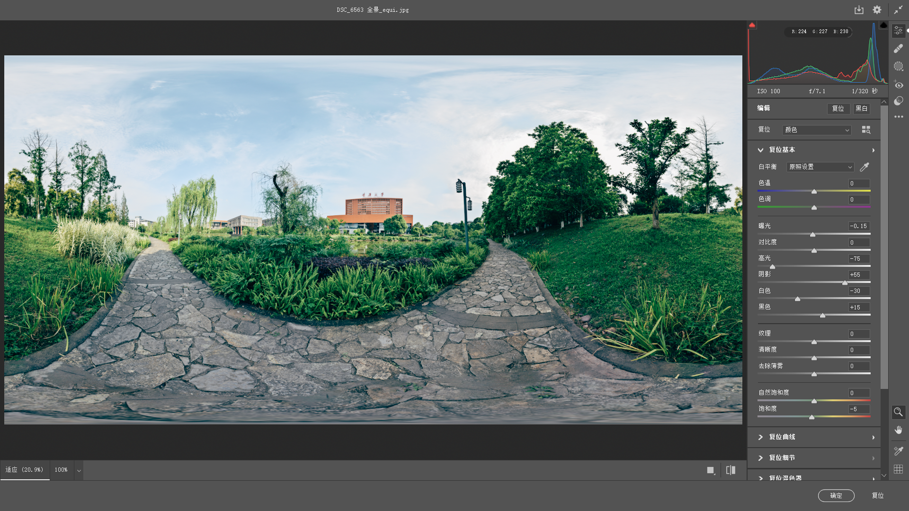
此处使用ACR套Ektar滤镜、拉暗部、压高光。
至此，2：1全景图的制作已经完成。
3.上传与部署
a.在线平台上传
2：1全景图可以直接上传到大疆天空之城、720云等在线平台：
https://www.skypixel.com/upload/360
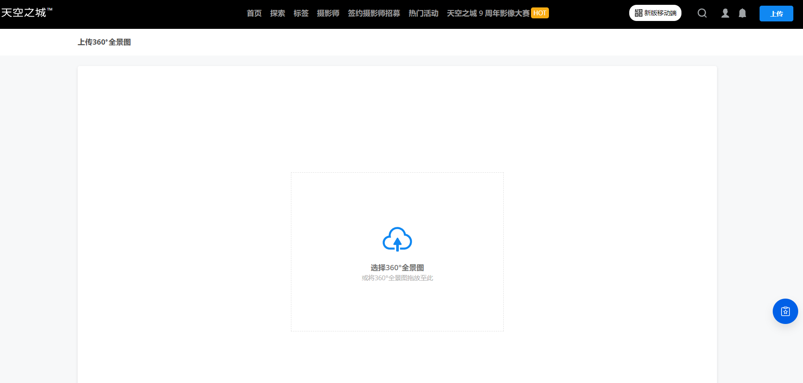
https://www.720yun.com/my/tour/task
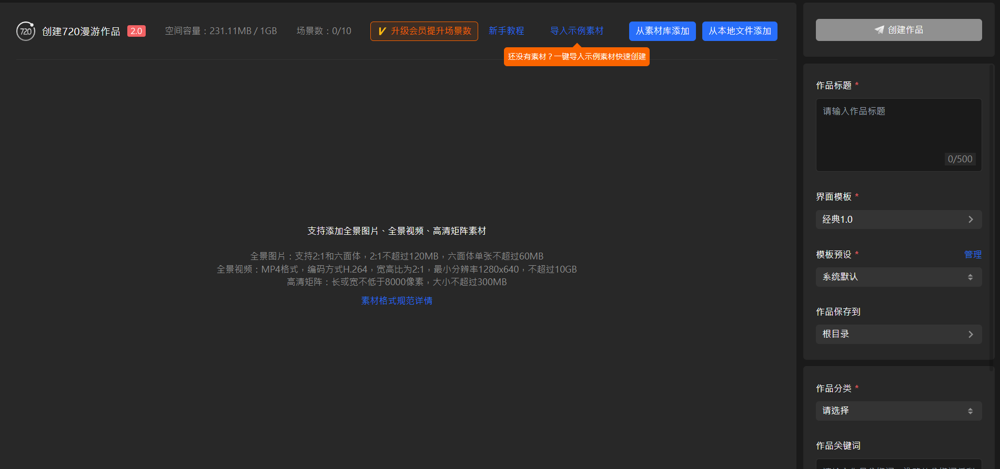
这两个平台均提供免费版本的全景图展示功能，直接上传2：1的图像即可，会自动进行处理。
如果你有其他更好的免费平台，可以在评论区分享给大家。
b.krpano（闭源，收费）工具、转换、虚拟漫游、二次开发
krpano提供了一套完整的js及二进制vr转换、开发工具，可以使用其js实现网页开发、使用其转换工具进行sphere和cube的转换及漫游制作等。其还提供了Linux平台的可执行版本，为Web应用开发提供了较为完善的解决方案。
其中，加密、保护等工具本文不对其进行介绍。
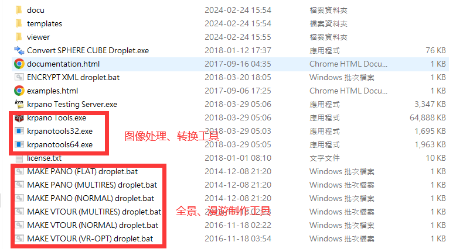
i.全景与漫游制作
直接选中所有需要制作的jpg图片文件，拖动放置到对应的bat脚本上即可。
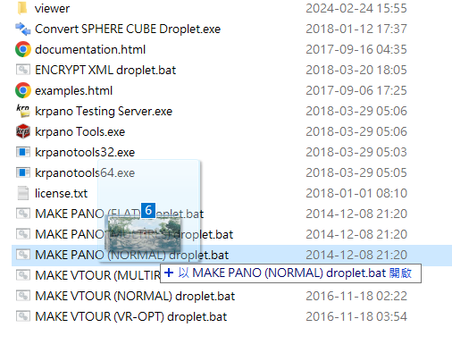
等待制作完成后，原始图像目录下会生成对应的文件夹。运行tour_testingserver后，可以进行预览。
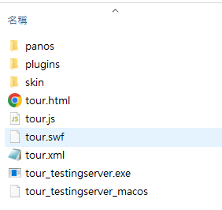
效果如下：

可以自定义进行修改，并部署到web服务器中。
ii.krpanotools进行图像转换、虚拟漫游编辑
krpanotools提供了2：1sphere和六面体cube转换功能，可以将单张2：1图片和六张1：1进行互相转换。使用时，先调整输出参数，然后直接拖放图片到窗口中间即可。

虚拟漫游编辑提供了对【3.b.i】中生成项目的编辑功能。
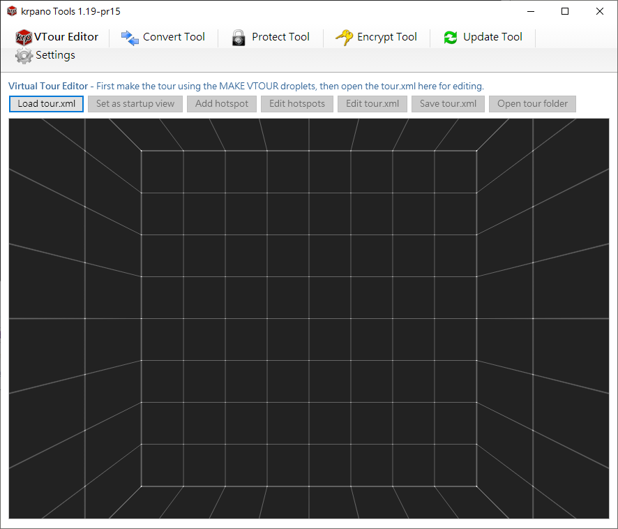
点击【Load tour.xml】，加载项目，然后即可对项目进行各种调整、编辑。具体功能不再一一赘述，
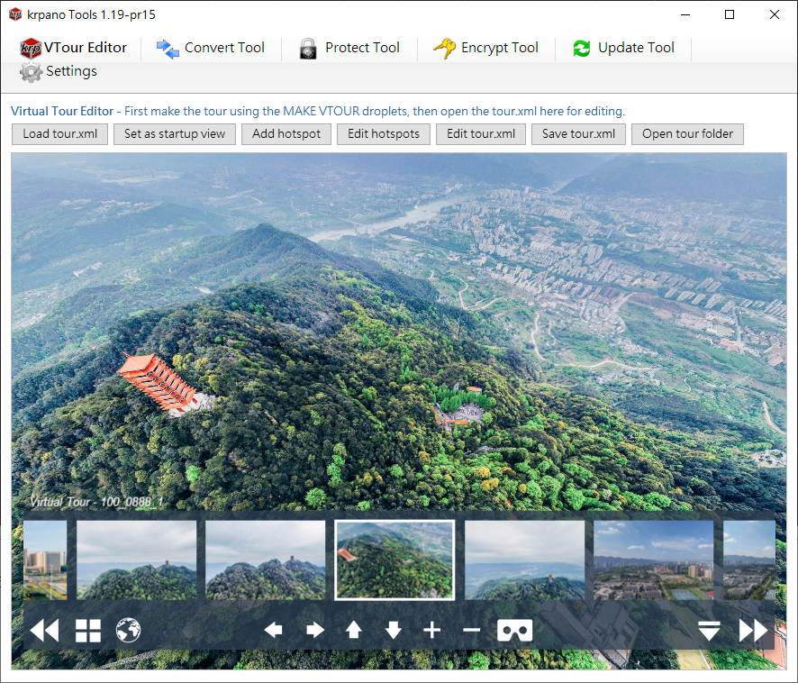
iii.二次开发（适用于软件开发人员）
krpano提供了详细的参考文档：https://krpano.com/docu/xml/。
可以基于krpano提供的各种工具及js库，进行自己的web项目开发。例如，可以使用spring-boot框架+MySQL数据库，开发一个提供全景图上传、自动处理的Web应用：
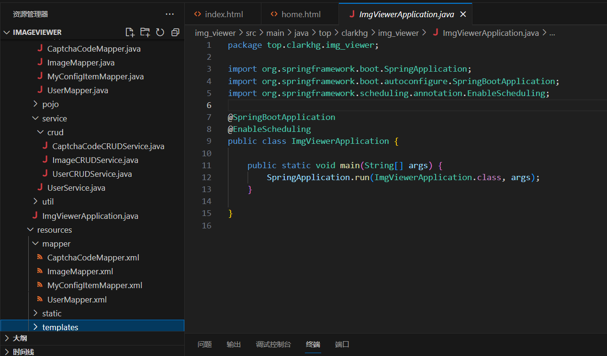
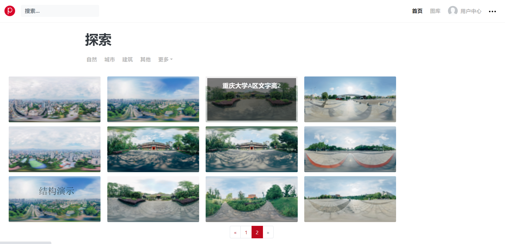
用户上传2：1的全景图片后，后端调用krpanotool进行转换、生成预览等操作。krpano提供了Linux平台的二进制版本，因此可以直接在Linux服务器上使用Docker部署。
c.本地浏览器模板
笔者制作了一个简陋的静态网站模板，需要自行修改添加你的jpg图片。这里提供链接：
https://wwt.lanzout.com/iTlg91z63tje
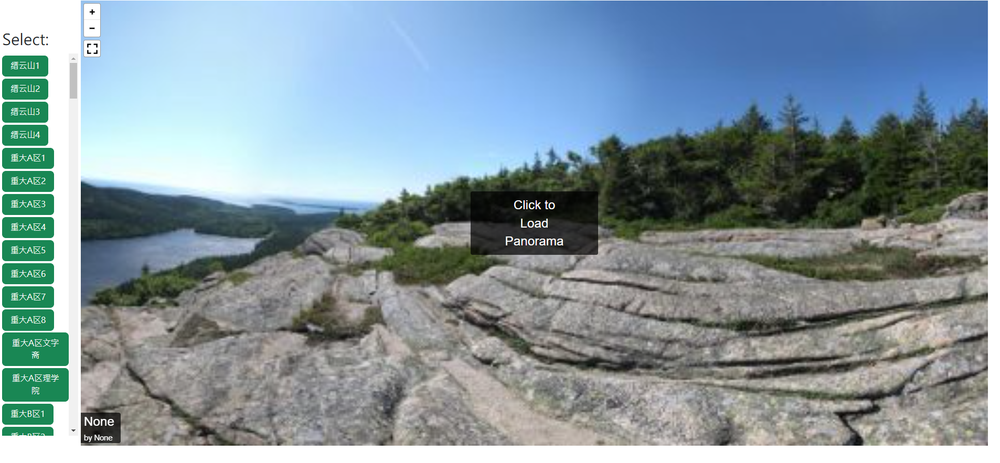
修改后，需要使用web服务器才能运行，也可使用其中的tour_testing_server。
d.BluesVR（静态网页推荐使用）
一个github开源项目，提供了较为美观的静态网页，使用krpano js：https://iflycn.github.io/vr/
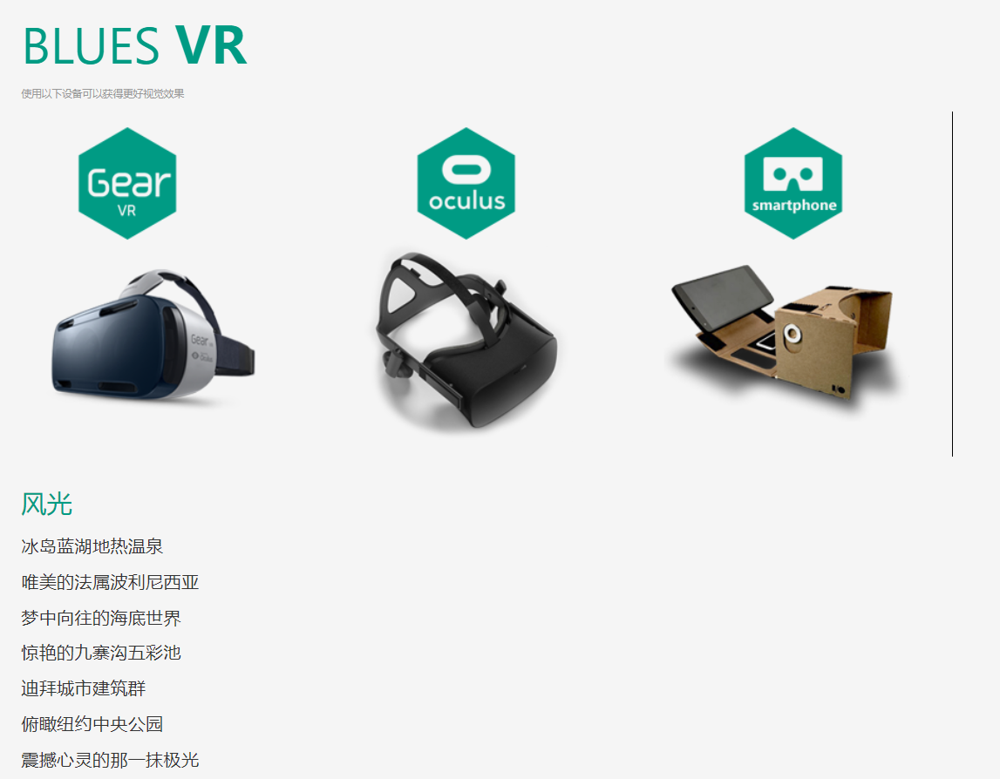
e.Marzipano（谷歌非官方开源项目，全景图像处理库）
Marzipano提供了与krpano js相似的功能，但该项目似乎没有离线版的图像转换、漫游制作工具，仅提供了在线版本。
官网：https://www.marzipano.net/
在线漫游编辑工具：https://www.marzipano.net/tool/#